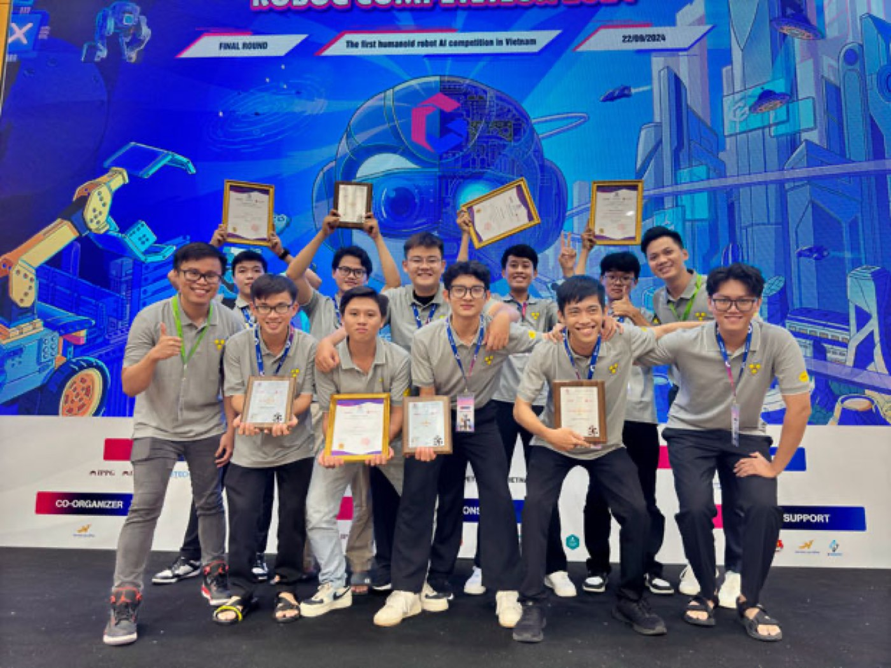
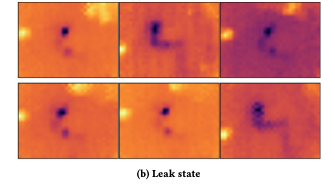
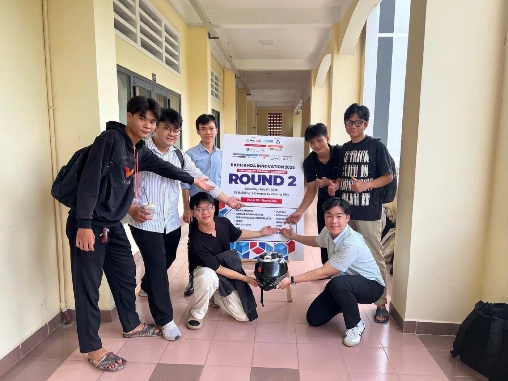
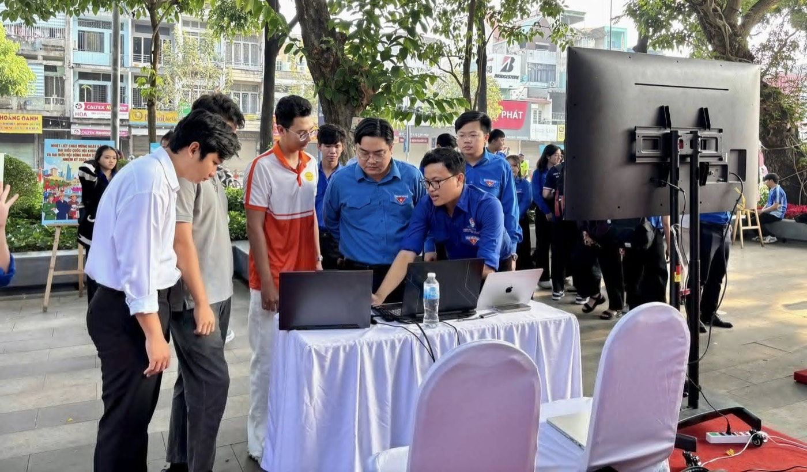
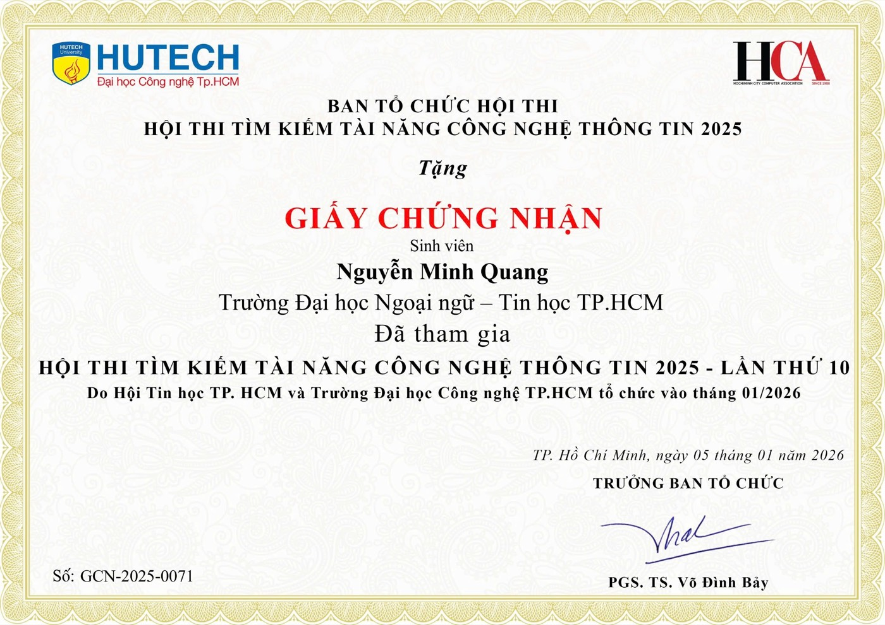

RoboG 2024
National Top 3 and Best Application Idea Award. Team HUFLIT AI Pioneers built RoboPub, a humanoid robot for public interaction.

Nguyen Minh Quang
Two 3-metre robots on a city street. A microcontroller with 320 KB of memory that keeps learning after it ships. One test for both: does it still work for the person standing in front of it?
Chapter 1 · Street
20 languages · 15,000+ visitors (team figures)
Two 3-metre interactive robots greeted visitors on Ho Chi Minh City's flower street, a city-level project by the HUFLIT Faculty of IT. Visitors raised a hand, the robot's camera took their photo, and the picture appeared on its heart-shaped display.
My part: computer vision, the on-robot display, teaching the public how to use the robots, and keeping them running through the event.
The street taught me what a benchmark cannot: changing light, weather and crowds broke assumptions that held in the lab.
Press: Thanh Niên · Tuổi Trẻ · Lao Động
National Top 3 and Best Application Idea Award. Team HUFLIT AI Pioneers built RoboPub, a humanoid robot for public interaction.

Team leader. An AI camera that detects hydrogen leaks from thermal images: Top 9, Indefol Solar Challenge (University–Industry Division).

Team leader. A smart motorcycle helmet: Top 20, University Division.

An offline AI assistant that answered students' questions about national elections at a Ho Chi Minh City community event in 2026.

Press: HUFLIT News · Facebook
IT Got Talent 2025 (Consolation Prize). Guided a university team in the 2026 Smart City IC Design Competition.

Chapter 2 · Lab
Small devices are usually trained once and then frozen. My research on continual learning asks how a microcontroller can keep adapting to new data in the field, without forgetting what it already knows, inside a memory budget of a few hundred kilobytes.
I study this at the CCIS Laboratory, National Formosa University (Taiwan), funded by a Taiwan Ministry of Education scholarship (FTIP 2026), on an STM32F746-class board. Earlier work budgets the memory for sparse weight updates and for a replay of past examples separately. I treat them as one shared pool. How that pool is divided matters a great deal when memory is tight and much less when it is generous, and accuracy keeps improving in a steady, predictable way as the replay grows.
Getting there meant rebuilding the TVM/TinyEngine toolchain, fixing bugs along the way, and finding that memory use measured on the device disagrees with the analytical cost model. On tiny hardware, nothing should be trusted until it is measured.
A second project, in the Department of Electrical Engineering at National Formosa University with Prof. Hui-Kai Su and an English-studies phonetician, asks a different question: how can a learner who cannot rely on hearing see whether a consonant was pronounced correctly? I am the technical lead on a prototype that finds the consonant in a recording, measures it, and answers with simple colour-coded visual feedback. It is ongoing, and a first demo is planned for December 2026.
Earlier, at TINH VI Lab (HUFLIT), I deployed models on constrained hardware: real-time traffic-sign detection, Android footwear defect inspection, thermal-vision hydrogen-leak monitoring, and edge-AI retrieval for Vietnamese traffic law.
Publications are listed in the CV (PDF).
Chapter 3 · Future
Vietnam has about 77 million motorbikes, and electric models are its fastest-growing segment. I would like to build a low-cost module that learns each battery pack's own baseline on the device and warns before a charge when something drifts. It is an aspiration, not a product yet.